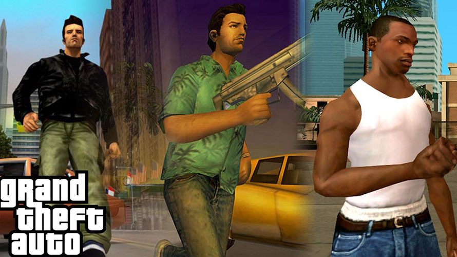
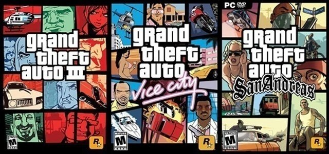
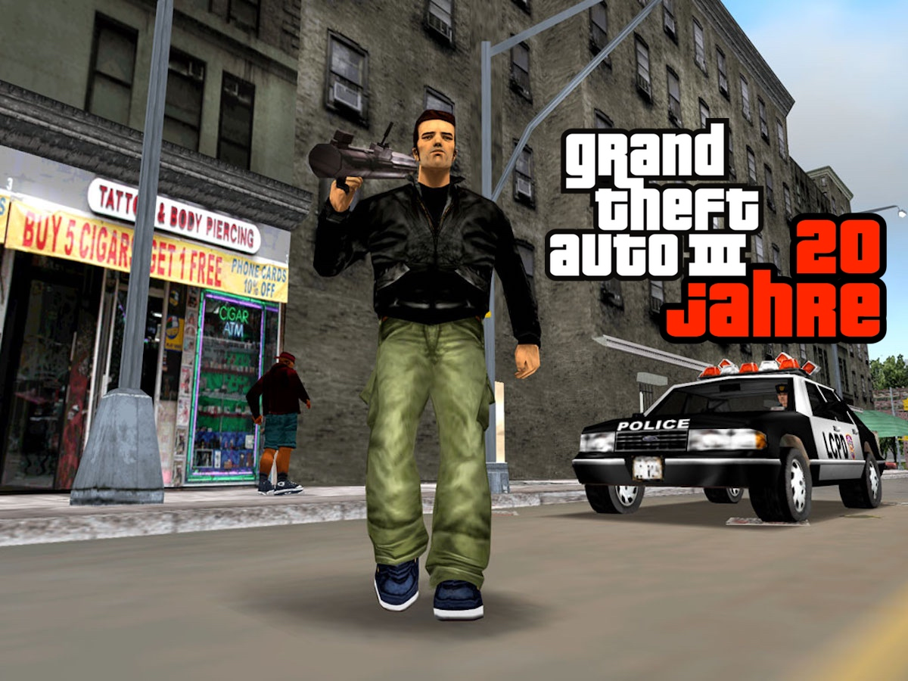
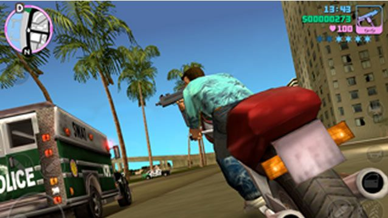
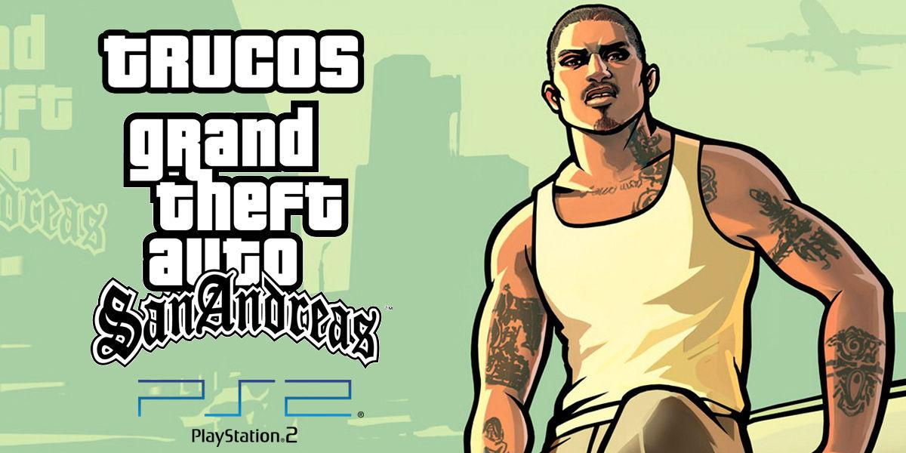

Grand Theft Auto 3D (III, VICE CITY, SAN ANDREAS)

Estos tres títulos, GTA 3, Vice City y San Andreas, formaron una trilogía que dejó una marca indeleble en la historia de los videojuegos, consolidando la serie Grand Theft Auto como una de las más influyentes y queridas en el mundo del entretenimiento interactivo.

Grand Theft Auto III (GTA 3) - 2001: El Salto a la Tercera Dimensión
Grand Theft Auto III, lanzado en 2001, marcó un hito significativo en la serie al introducir una perspectiva totalmente tridimensional y una experiencia de juego en un mundo abierto. Desarrollado por Rockstar North, el juego se ambienta en Liberty City y sigue la historia de Claude, un criminal que busca venganza en medio de la corrupción y el caos.

GTA 3 fue alabado por su libertad sin precedentes, permitiendo a los jugadores explorar la ciudad, realizar misiones y participar en actividades criminales. La narrativa cinematográfica, los personajes memorables y la banda sonora contribuyeron a su éxito. Este título sentó las bases para la fórmula de mundo abierto que se convertiría en característica distintiva de la serie.
Grand Theft Auto: Vice City - 2002: Una Oda a los Años 80
En 2002, Rockstar lanzó GTA: Vice City, una secuela espiritual de GTA 3 ambientada en una versión ficticia de Miami en la década de 1980. Tommy Vercetti, un criminal recién liberado, busca construir su imperio criminal en medio de una historia llena de traiciones y giros. La ambientación ochentera, la estética neon y la banda sonora repleta de éxitos de la época contribuyeron a hacer de Vice City un juego querido y recordado.

GTA: Vice City mantuvo la jugabilidad revolucionaria de su predecesor y expandió las opciones de los jugadores al ofrecer propiedades para comprar y una mayor diversidad de misiones. La trama intensa y la inmersión en la cultura de los años 80 consolidaron a Vice City como uno de los títulos más queridos de la serie.
Grand Theft Auto: San Andreas - 2004: Ambición y Variedad sin Límites:
En 2004, Rockstar lanzó el ambicioso GTA: San Andreas, situado en una versión ficticia de California en la década de 1990. Los jugadores asumen el papel de Carl "CJ" Johnson, quien regresa a su hogar para enfrentarse a la corrupción y la violencia en su ciudad natal. San Andreas destacó por su inmensidad geográfica, que incluía tres ciudades principales, zonas rurales y áreas suburbanas.

El juego introdujo elementos RPG, permitiendo a los jugadores personalizar la apariencia de CJ, mejorar sus habilidades y explorar un mundo vasto lleno de oportunidades. San Andreas también abordó temas sociales y políticos, convirtiéndose en una obra maestra narrativa que exploraba la vida en los suburbios y la cultura gangsta. La diversidad de misiones, la libertad para explorar y las actividades secundarias convirtieron a San Andreas en un clásico instantáneo.